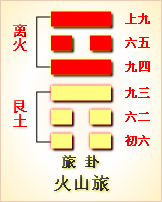

<!DOCTYPE html PUBLIC "-//W3C//DTD XHTML 1.0 Transitional//EN" "http://www.w3.org/TR/xhtml1/DTD/xhtml1-transitional.dtd">

<html xmlns="http://www.w3.org/1999/xhtml">
<head>
<meta content="text/html; charset=utf-8" http-equiv="Content-Type"/>
<title>周易第五十六卦：旅卦 火山�?离上艮下原文解释翻译-周易-国学�?/title>
<meta content="周易,旅卦,火山�?离上艮下" name="keywords"/>
<meta content="周易,旅卦,火山�?离上艮下，周易第五十六卦：旅�?火山�?离上艮下解释翻译�?（火山旅）离上艮�?《旅》：小亨。旅贞吉�?初六，旅琐琐，斯其所取灾�?六二，旅即次，怀其资，得童仆，贞�?九三，旅焚其次，丧其童仆，贞厉�?九四，旅于处，得其资斧，�? name="description"/>
<link href="css.css" media="screen" rel="stylesheet" type="text/css"/>
</head>
<body>
<div class="gxlayout">
</div>
<div class="gxlayout">
<div class="ihead">
<div class="title"><a>周易</a></div>
<ul class="more fl">
<li>当前位置:<a>国学梦首�?/a> &gt; <a>国学经典</a> &gt; <a>经部</a> &gt; <a>四书五经</a> &gt; <a>周易</a> &gt;  周易第五十六卦：旅卦 火山�?离上艮下原文解释翻译</li>
</ul>
</div>
<div class="gxbl fl">
<div class="latitle">

<h1>周易第五十六卦：旅卦 火山�?离上艮下</h1>
<div class="lainfo"><span>作者：佚名</span> <span>全集�?a>周易</a></span> <span>来源：网�?/span> <span>[<a rel="nofollow" target="_blank">挑错/完善</a>]</span></div>
</div>
<div class="lacontent">
<div class="clearfix"></div>
<!--<!-- allowfullscreen="" frameborder="0" height="36" src="http://www.ximalaya.com/swf/sound/yellow.swf?id=1382847&amp;auto=true" width="260"></iframe>-->
<p style="text-align:center"></p>
<p style="text-align:center"><a>周易第五十六卦详�?/a></p>
<p style="text-align:center"><a>第五十六卦初六爻详解</a>　<a>第五十六卦六二爻详解</a>　<a>第五十六卦九三爻详解</a></p>
<p style="text-align:center"><a>第五十六卦九四爻详解</a>　<a>第五十六卦六五爻详解</a>　<a>第五十六卦上九爻详解</a></p>
<p><strong><a target="_blank">周易</a>第五十六�?�?火山�?离上艮下</strong></p>
<p>旅：小亨，旅贞吉�?/p>
<p>彖曰：旅，小亨，柔得中乎外，而顺乎刚，止而丽乎明，是以小亨，旅贞吉也。旅之时义大矣哉!</p>
<p>象曰：山上有火，�?君子以明慎用刑，而不留狱�?/p>
<p>初六：旅琐琐，斯其所取灾。象 曰：旅琐琐，志穷灾也�?/p>
<p>六二：旅即次，怀其资，得童仆贞。象曰：得童仆贞，终无尤也�?/p>
<p>九三：旅焚其次，丧其童仆，贞厉。象曰：旅焚其次，亦以伤矣。以旅与下，其义丧也�?/p>
<p>九四：旅于处，得其资斧，我心不快。象曰：旅于处，未得位也。得其资斧，心未快也�?/p>
<p>六五：射雉一矢亡，终以誉命。象曰：终以誉命，上逮也�?/p>
<p>上九：鸟焚其巢，旅人先笑后号啕。丧牛于易，凶。象曰：以旅在上，其义焚也。丧牛于易，终莫之闻也�?/p>
<p><strong><a href="56_旅卦.html" target="_blank">旅卦</a>卦象，火山旅卦的象征意义</strong></p>
<p>旅卦，这个卦是异卦相叠，下卦为艮，上卦为离。艮为山，离为火�?a target="_blank">山中</a>燃火，烧而不止，火势不停地向前蔓延，如同途中行人，急于赶路，因而称旅卦�?/p>
<p>旅卦位于<a href="55_丰卦.html" target="_blank">丰卦</a>之后，《序卦》之中这样解释道：“穷大者必失其居，故受之以旅。”丰盛到极点而不知收敛，一定会离开居所，所在以丰卦之后，接着谈旅。《杂卦》中说道：“丰，多故也。亲寡，旅也。”丰卦有许多故旧，旅卦则很少有亲友。这两者是正覆关系�?/p>
<p>《象》中这样解释旅卦：山上有火，�?君子以明慎用刑，而不留狱。这里指出：《旅卦》的卦象是艮(�?下离(�?上，为火势匆匆蔓延之表象，象征行旅之人匆匆赶�?君子观此应谨慎使用刑罚，明断决狱�?/p>
<p>旅卦象征旅行，启示的道理是依义顺时，属于下下卦。《象》中这样来断此卦：飞鸟树上垒窝巢，小人使计举火烧，君占此卦为不吉，一切谋望枉徒劳�?/p>
<p>【旅卦卦象，火山旅卦的象征意义释义�?/p>
<p>此卦卦名为旅。甲骨文中的“旅”字像众人站在旗下。旗，指车旗;人，指士兵。《说文》中说：“旅，军之五百人为旅。”可见“旅”字的本义是指兵士。由于兵士在<a target="_blank">战争</a>中走到哪里便在哪里安营扎寨，没有固定的居所，所以“旅”的引申义为拋家舍业、羁旅于外的意思。丰卦中出现了大运动，一场运动必然会使一些人逃亡避难，所以丰卦的后面是旅卦。《序卦传》中说：“穷大者必失其居，故受之以旅。”不过从丰卦中看不出穷的意思来，所以这种说法就有些牵强了�?/p>
<p>旅卦�?a target="_blank">�?/a>：旅卦的卦圆是二个阴爻三个阳爻，其排列顺序与丰卦的卦画正好相反。旅卦与丰卦互为覆卦�?/p>
<p>旅卦卦象：从卦象上分析，旅卦上卦为离为火，下卦为艮为山，山上有火就是旅卦的卦象。远古人类追逐猎物，随处而居，有洞穴则居于洞穴中，没有洞穴则宿于露天。在露宿的周围点』燃篝火，以防野兽的侵袭。这就是旅卦的大形象�?/p>
<p>关键词：周易,旅卦,火山�?离上艮下</p>
<div class="clearfix"></div>
<div class="title"><div class="thot">解释翻译</div><span>[挑错/完善]</span></div><p><a href="56_旅卦.html" target="_blank">旅卦</a>：小事通。占问行旅得吉兆�?/p>
<p>初六：旅途三心二意，离开住所，结果遭祸�?/p>
<p>六二：行到市场，怀揣钱财，买来奴隶，占得吉兆�?/p>
<p>九三：行到着火的市场，买来的奴隶借机逃走，占得险兆�?/p>
<p>九四：行到住处，虽然赚了钱，心里却不安�?/p>
<p>六五：途中射野鸡，一箭中的，结果得到善射的美名�?/p>
<p>上九：鸟巢失了火，旅人先高兴欢笑，后来却呼号哭泣，狄人抢去了牛羊。凶险�?/p>
<div class="title"><div class="thot">注释出处</div><span>[请记住我�?国学�?www.guoxuemeng.com]</span></div><p>①旅是本卦的标题。旅的意思是行旅，商旅，全卦的内容也与此有关。标题的“旅”字是卦中多见词�?/p>
<p>②琐琐：意思是三心二意�?/p>
<p>③斯：离开。所：指住所�?/p>
<p>(4)取灾：得祸�?/p>
<p>⑤即：走近，走到�?次：用作“肆”，意思是市场�?/p>
<p>(6)焚其次：市场夫火�?/p>
<p>(7)处：止，指住处�?/p>
<p>(7)资斧：钱财。斧：斧形钱币�?/p>
<p>(9)命：名声�?/p>
<p>(10)易：用�?/p>
<div class="clearfix"></div>
<div class="contextdhall clearfix">
<ul>
<li>上一篇：<a href="55_丰卦.html">周易第五十五卦：丰卦 雷火 震上离下</a> </li>
<li>下一篇：<a href="57_巽卦.html">周易第五十七卦：巽卦 巽为�?巽上巽下</a> </li>
<li>全   文�?a>周易</a></li>
</ul>
</div>
</div>
<div class="clearfix mt20"></div>
</div>
</div>
<div class="clearfix mt20"></div>
<div class="gxlayout">
</div>
<script>
var _hmt = _hmt || [];
(function() {
  var hm = document.createElement("script");
  hm.src = "https://hm.baidu.com/hm.js?872034ded637616c5cf8e173a446bb0e";
  var s = document.getElementsByTagName("script")[0];
  s.parentNode.insertBefore(hm, s);
})();
</script>
</body>
</html>
